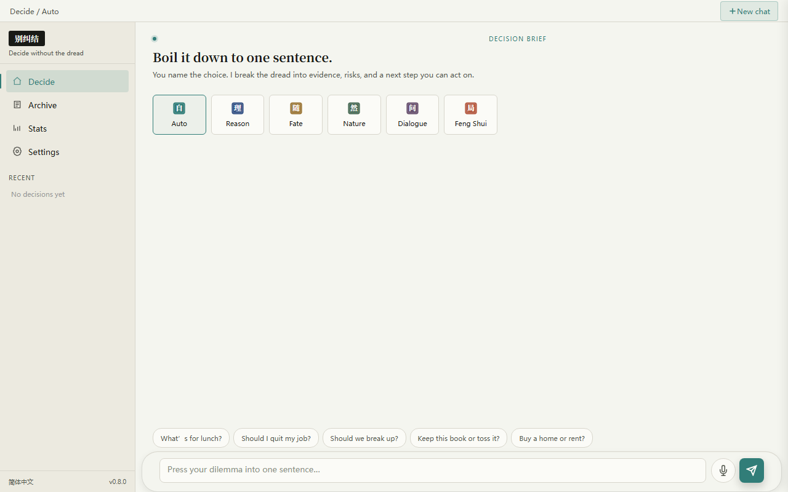
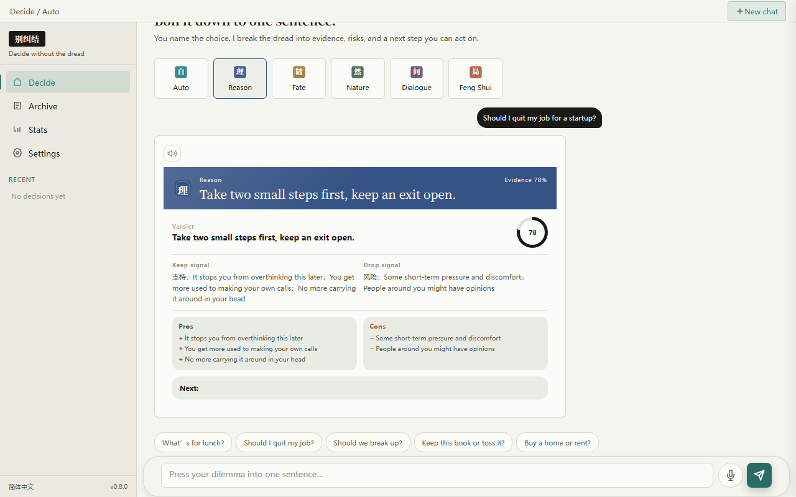
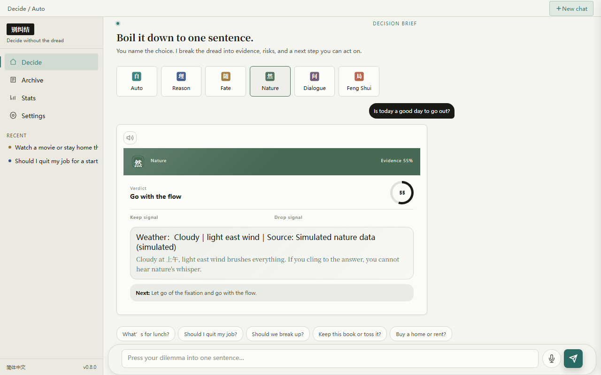
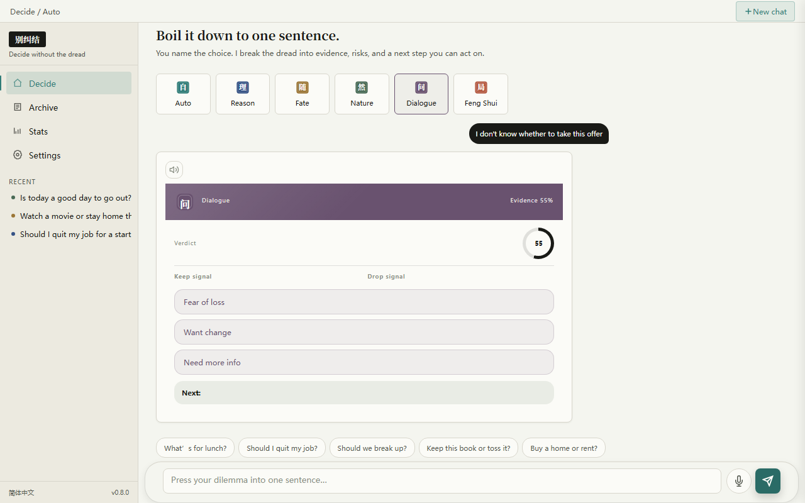
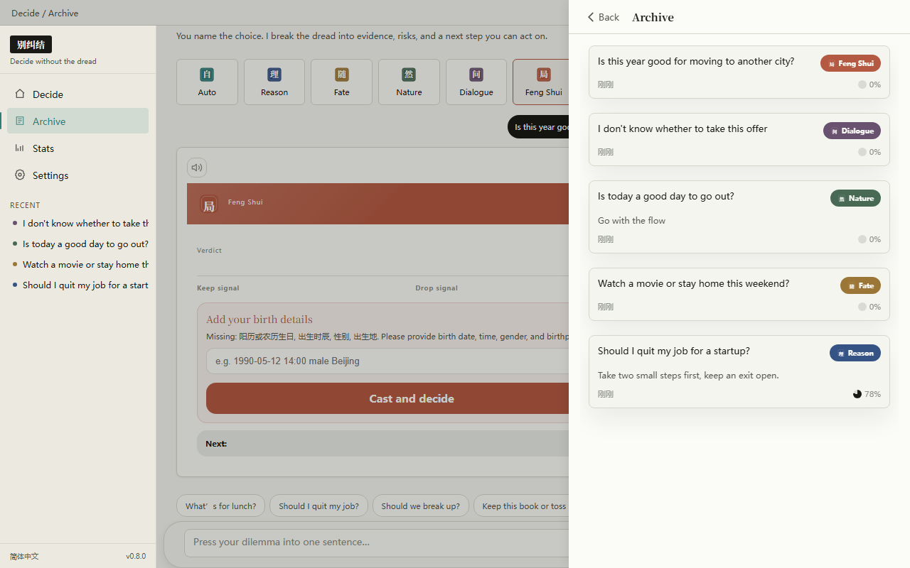
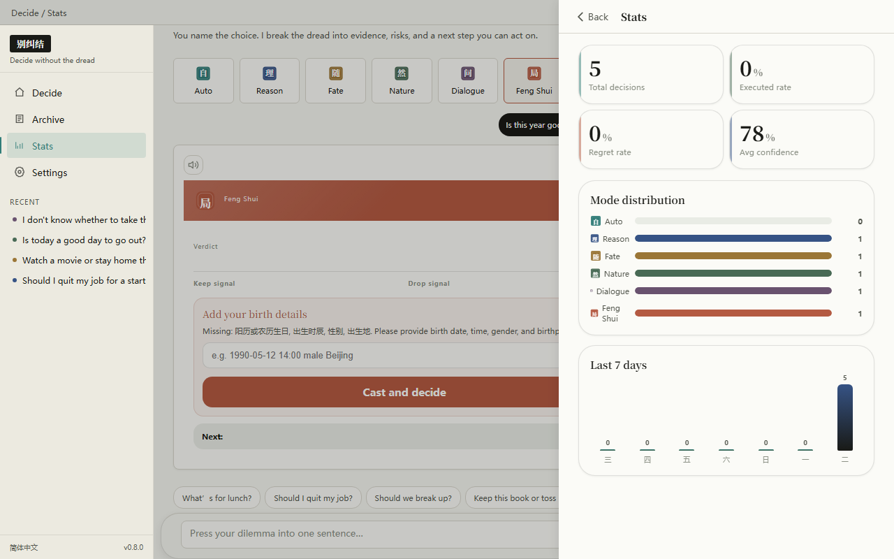
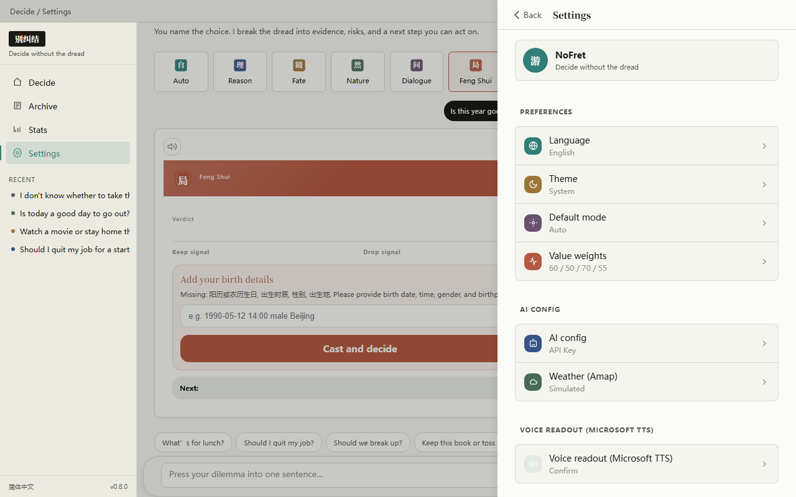

Type, speak, or snap a photo — you name the dilemma, I'll break the anxiety into weighable evidence, risks, and your next move.

Cream paper backdrop, six single-letter seal buttons. Not sure which to pick? Let "Auto" decide — the system routes intelligently based on your wording.
Image upload on the left, auto-expanding text in the middle, mic and teal send button on the right. Room to breathe — comfortable typing, effortless voice, visual decisions too.

For high-regret decisions like quitting a job, buying a home, or big-ticket spending. Structured breakdown: benefits, risks, reversibility, and the smallest next step.

When emotions get stuck, reason doesn't help. Weaving in time, weather, and wind direction, nature gives you a signal to see things differently.

You already have the answer — you just don't dare face it. Three to five rounds of probing questions help you hear the word you truly want to say.

All decisions auto-saved locally; mark them "Done" or "Regretted" anytime. Desktop sidebar syncs in real time.

Follow-through rate, regret rate, mode distribution, timeline — reviewing your decision patterns is more honest than any self-help book.

Edge TTS built in for free, weather API key ready to go — just configure your own LLM key for real AI analysis.
Up and running in three minutes, zero configuration.
No key? You can still explore the full UI; weather service is built-in.
Made with ❤ for people who overthink · MIT Licensed